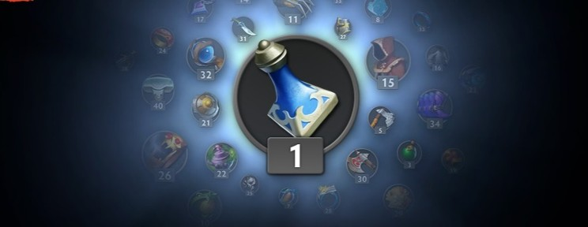

Опыт Dota 2
Опыт — важная составляющая большинства онлайн-игр. В Dota 2 она также присутствует, при чем как непосредственно в матче, так и в виде системы уровней аккаунтов. В этом материале мы подробнее разберем процесс получения опыта в Dota 2, а также на что он влияет.
Опыт — важный элемент матча в Dota 2. Благодаря опыту ваш герой может поднять уровень, увеличивая свои характеристики и получая доступ к новым способностям или талантам. В начале игры все персонажи стартуют с первым уровнем и одним очком способности. Зарабатывая опыт благодаря убийству крипов и героев, контролю аванпостов, а также использованию of Midas или Tome of Knowledge, вы можете повышать уровень персонажа вплоть до 30-го.
Чтоб заработать опыт в Доте, необязательно лично убить героя или крипа, а достаточно просто находиться в радиусе его получения — 1300 единиц от убитого существа. При этом опыт распределяется равномерно между всеми союзными героями, находящимися в радиусе рядом с убитым существом.
Опыт также используется в системе уровней аккаунтов. Уровень аккаунта в Dota 2 является своеобразным показателем ваших достижений и зависит от количества трофеев. Для получения трофея достаточно играть матчи, выполнять испытания и участвовать в различных ивентах, которые появляются в Доте.